PIPELINE
DEVSECOPS
VISUALIZAÇÃO INTERATIVA
Pipeline DevSecOps Completo
Fluxo integrado de segurança em 3 fases: Estação de Trabalho, Pipeline CI/CD e Auditoria Manual. O diagrama abaixo representa todo o ciclo de vida de segurança do desenvolvimento até a produção.

Ferramentas Principais
Fases do Pipeline
Fase 1: Estação de Trabalho
Configuração do ambiente, análise de bibliotecas e execução de ferramentas de segurança locais antes do commit.
Fase 2: Pipeline CI/CD
Revalidação automática paralela, DAST, geração de SBOM e monitoramento contínuo no pipeline de integração.
Fase 3: Auditoria Manual
Triagem de escopo, pentest com Burp Suite, coleta de evidências e geração de relatório final com sign-off.